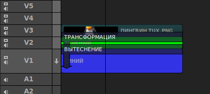
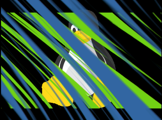
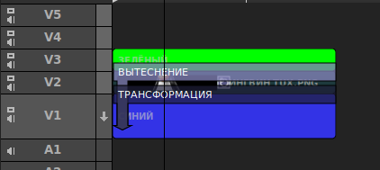
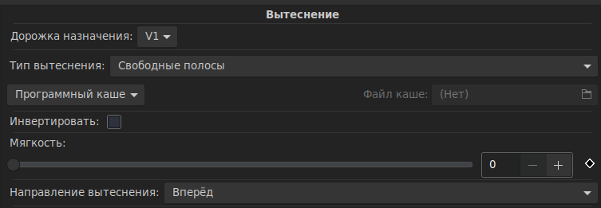

Режимы композитинга
Содержание
Способ работы с композиторами определяется режимом композитинга. Пользователи могут выбрать режим композитинга в соответствии со своими предпочтениями или потребностями редактирования определённого видеоряда.
Чтобы установить Режим композитинга для видеоряда, выберите его в меню Видеоряд → Режим композитинга
Это простой и лёгкий в использовании режим композитинга. Композиторы не требуются. Затемнение, вытеснение и трансформации создаются с помощью эффектов. Некоторые функции композитинга недоступны. Создавать композиции дерева узлов не получится. Это мощный и сложный режим композитинга. Пользователи могут свободно выбирать дорожки назначения, перемещать композиторы и при необходимости создавать композиции дерева узлов. Компоновка в стандартном режиме (без композиторов) аналогична использованию слоёв в таких приложениях, как Gimp и Photoshop. Компоновка в стандартном режиме (без композиторов) происходит снизу вверх. Композиторы не используются. В этом режиме композиторы имеют дорожку источника и дорожку назначения. На монтажном столе композитор отображается в виде тёмного прямоугольного объекта поверх двух дорожек. Дорожка источника всегда находится над композитором, но дорожка назначения может быть любой из дорожек ниже. Параметры, определяющие полученное изображение, редактируются во вкладке Правка. Комбинируя несколько композиторов на нескольких дорожках можно получить сложные композитные кадры. В видеоредакторе Flowblade порядок сборки композиций выполняется сверху вниз, а не снизу вверх как в Gimp или Photoshop. На первый взгляд такой метод сборки, особенно при создании определённых типов составных видеоклипов, может показаться не интуитивным, если конечно, не знать о порядке покадровой сборки композита. В этом примере мы продемонстрируем, как расположение клипа и композитора влияет на композицию в целом. Мы попытаемся разместить изображение с пингвином Tux поверх двухцветного фона, сделанного сочетанием зелёных и синих цветовых клипов с использованием типа вытеснения Свободные полосы. Чтобы начать работу с прозрачностью, рисунок «Пингвин Tux.png» будет компоноваться с использованием композитора Трансформация. Цветовые клипы СИНИЙ и ЗЕЛЁНЫЙ и графический рисунок «Пингвин Tux.png» с альфа-каналом Желаемый результат Здесь мы разместили клипы на дорожках, подобно тому, как они должны быть размещены в Gimp. Неправильное расположение (как Gimp)  Что здесь происходит? «Пингвин Tux.png» компонуется на «Зелёный» цветовой клип, а результирующее изображение компонуется с помощью «Свободных полос», сверху вытесняющего «Синий» цветовой клип. В итоге получаем неверный результат. Неверный результат  Здесь для получения желаемого результата, мы установили клипы в правильном порядке. Правильное расположение  «Зелёный» цветовой клип сначала компонуется с использованием «Свободных полос» вытесняя «Синий» цветовой клип. После этого «Пингвин Tux.png» компонуется поверх полученного изображения (которое уже отображается на дорожке V1), используя другой композитор, например Трансформация для получения выходного изображения. Дорожка назначения в композиторе «Вытеснение» — V1, дорожка источника — V3  Получаем желаемый результатСтандартный (без композиторов)
Свободное перемещение композиторов
Режим «Стандартный (без композиторов)»
Работа в стандартном режиме
Режим «Свободное перемещение композиторов»
Работа с композиторами
Сборка композиций в режиме композитинга «Свободное перемещение композиторов»
Покадровая сборка композита
ПРИМЕР: Создание трёхслойного составного клипа
Элементы медиа и желаемый результат
Порядок расположения клипов, подобно расположению изображения в Gimp или в Photoshop даст неверный результат.
Правильный порядок клипов и композиторов.
Видеоуроки
Основы композитинга
Компоновка изображений в Flowblade
Пример создания анимации